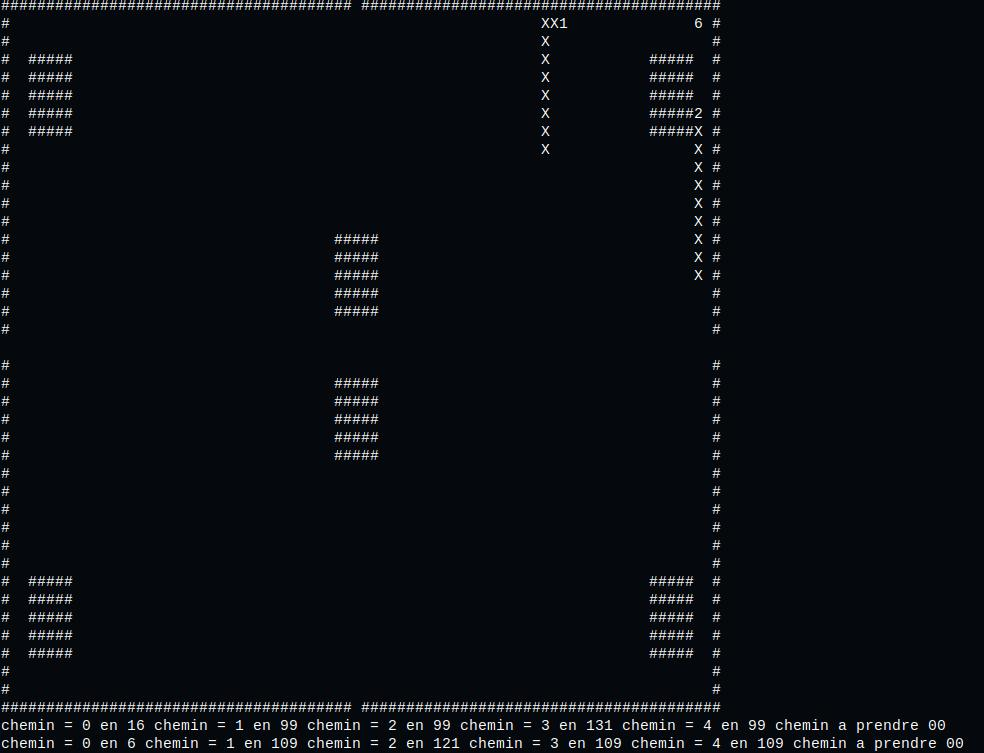
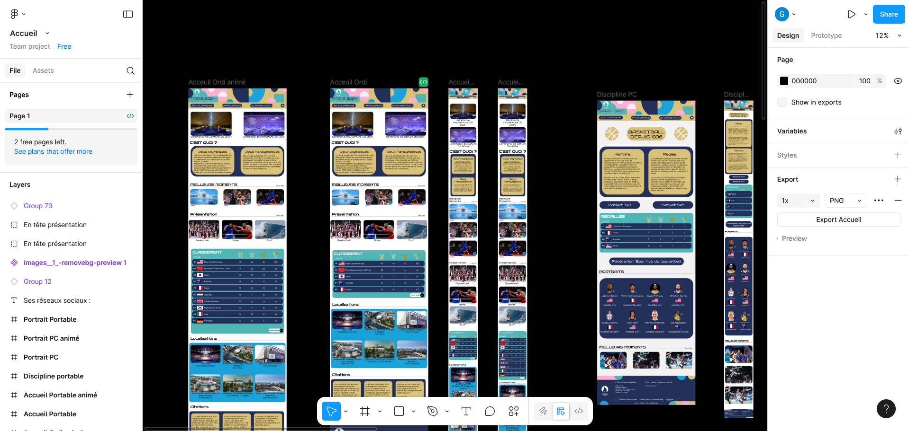
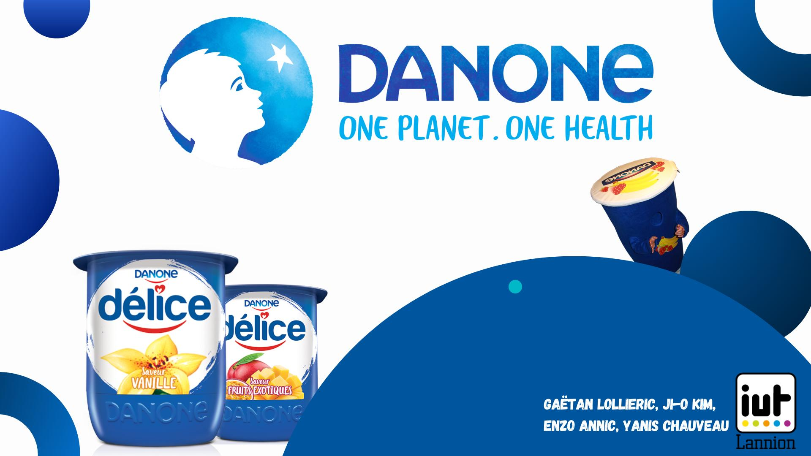
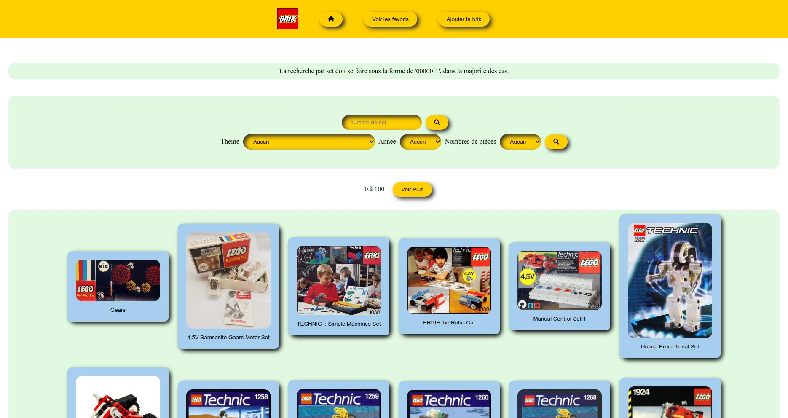
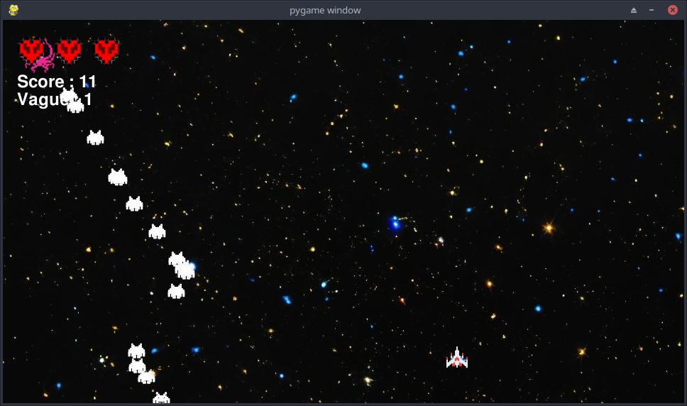

Mes projets
Voici une liste des projets que j'ai réalisé.
Duel de snake automatisé
Compétence :
Appréhender et construire des algorithmes
 C code
C code
Site web des Jeux Olympiques 2024
Compétence :
Identifier les besoins métiers des clients et des utilisateurs
- Figma
- HTLM5
- CSS
Base de donées

Compétence :
Concevoir et mettre en place une base de données à partir d'un cahier des charges client
- SQL
SEL et RSE de Danone
Compétence :
Identifier ses aptitudes pour travailler dans une équipe
S - Situation :
- Recherche
site web Flask légo
Un catalogue de lego pour vous! Ce projet avait pour but de créer une application Flask à l'aide de python, HTLM, CSS et SQL, pour rechercher des informations sur les sets LEGO.
- Python
- HTLM5
- CSS
- SQL
Space Invaders
Un Space Invaders revisité à ma façon, n'hésitez pas à le tester!
- Python